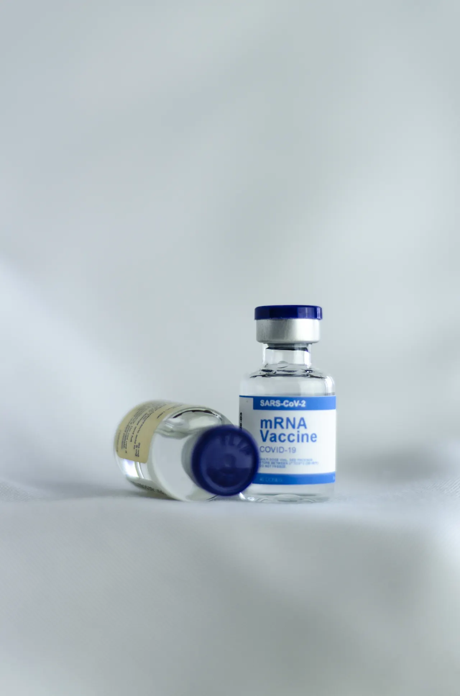

암 백신은 맞춤 제작에 가깝습니다

mRNA 암 백신은 감염병 백신과 출발점이 다릅니다. 바이러스를 미리 막는 방식이 아니라 환자의 종양에서 나온 돌연변이 정보를 읽고 면역계가 암세포를 더 잘 알아보게 돕는 접근입니다. 특히 개인 맞춤형 백신은 환자마다 표적이 달라 제조 과정이 복잡합니다.
중요한 것은 주사를 맞은 뒤 항체가 생겼다는 신호만이 아닙니다. 암에서는 면역세포가 실제 종양을 찾아가고, 남아 있는 미세 암세포를 억제하며, 시간이 지나도 재발을 늦추는지가 핵심입니다. 초기 면역 반응이 좋아 보여도 임상적으로 의미 있는 재발률 감소로 이어져야 합니다.
그래서 mRNA 암 백신의 가치는 대규모 임상에서 더 분명해집니다. 소규모 연구에서 희망적인 결과가 나와도 환자군이 넓어지면 종양 종류, 면역 상태, 병기, 기존 치료 이력에 따라 결과가 갈릴 수 있습니다. 과학적으로는 기대가 크지만 상업화까지는 제조와 임상 검증이 함께 넘어야 할 산이 많습니다.
혼자보다 병용이 중요합니다
현재 암 백신 연구는 면역항암제와의 병용에서 의미를 찾는 경우가 많습니다. 백신이 암세포의 표식을 알려 주고, 면역관문억제제가 면역세포의 브레이크를 풀어 주는 식입니다. 두 치료가 맞물리면 재발 위험을 낮출 가능성이 생깁니다.
하지만 병용 치료는 효과와 부작용을 동시에 봐야 합니다. 면역계를 강하게 자극하면 피부, 장, 간, 폐 같은 정상 조직에도 염증이 생길 수 있습니다. 암이 줄어드는지만 볼 것이 아니라 치료 중단률, 중증 부작용, 삶의 질 변화를 함께 확인해야 합니다.
의료 현장에서 중요한 질문은 누구에게 먼저 쓸 것인가입니다. 재발 위험이 높은 환자, 수술 뒤 미세 잔존 질환이 의심되는 환자, 특정 돌연변이 패턴을 가진 환자에게 우선 쓰일 가능성이 큽니다. 모든 암에 넓게 쓰이는 치료가 아니라 정교한 선별이 필요한 치료입니다.
시간표도 치료의 일부입니다
개인 맞춤형 암 백신은 환자의 종양 샘플을 분석하고, 표적 후보를 고르고, mRNA를 설계해 제조한 뒤 품질 검사를 거쳐야 합니다. 이 과정이 길어지면 치료 시점을 놓칠 수 있습니다. 암 치료에서는 과학적 설계만큼 제조 시간표가 중요합니다.
제조가 빨라져도 병원 시스템이 따라와야 합니다. 조직 채취, 유전체 분석, 데이터 전송, 약물 배송, 투여 일정이 한 흐름으로 이어져야 합니다. 대형 암센터에서는 가능해도 지역 병원에서는 인프라 차이가 생길 수 있습니다. 접근성은 가격만의 문제가 아닙니다.
비용도 큰 변수입니다. 맞춤형 치료는 생산 단위가 작고 품질 관리가 복잡해 가격이 높아질 수 있습니다. 보험 적용과 환자 부담이 정리되지 않으면 좋은 임상 결과가 나와도 실제 사용은 제한될 수 있습니다.
발표자료에서 볼 숫자
임상 발표를 볼 때는 전체 생존기간, 무재발 생존기간, 추적 기간, 대조군 치료 수준을 먼저 확인해야 합니다. 상대 위험 감소율이 커 보여도 절대 위험 차이가 작으면 실제 의미는 달라질 수 있습니다. 환자 수와 추적 기간이 충분한지도 중요합니다.
또 하나는 하위군 분석입니다. 특정 돌연변이 부담이 높은 환자에게만 효과가 크거나, 특정 병용 요법에서만 결과가 좋다면 사용 범위는 좁아집니다. 과학적으로는 중요한 발견이지만 시장 규모와 치료 전략은 다르게 계산해야 합니다.
mRNA 암 백신은 암 치료의 중요한 방향 중 하나입니다. 다만 기대가 치료 표준으로 바뀌려면 재발률, 생존기간, 부작용, 제조 시간, 비용이 모두 설득력을 가져야 합니다. 초기 반응보다 긴 추적 결과가 더 중요합니다.
관련 영상
암 백신 개발, 어디까지 왔나
암 백신의 진짜 시험대는 발표장의 그래프가 아니라 몇 년 뒤 환자가 재발 없이 지내는 시간입니다. 기술의 가능성은 분명하지만, 의료 현장에 들어가려면 환자 선별과 제조 속도, 비용 문제가 함께 풀려야 합니다.
mRNA 암 백신은 초기 반응보다 재발률과 병용 치료를 봐야 합니다을 볼 때는 발표 직후의 반응보다 다음 분기까지 이어지는 숫자를 함께 확인하는 편이 좋습니다. 단기 뉴스는 방향을 빠르게 바꾸지만 실제 변화는 계약, 예산, 생산, 소비 습관처럼 느린 항목에서 굳어집니다. 이 차이를 나누어 보면 과장된 기대와 실제 지속 가능성을 구분할 수 있습니다.
가장 실용적인 점검 방법은 한 가지 지표에 기대지 않는 것입니다. 가격, 수요, 비용, 규제, 실행 시간이 같은 방향으로 움직이는지 확인해야 합니다. 어느 하나만 좋아도 나머지가 따라오지 않으면 결과는 늦어지고, 여러 조건이 동시에 맞으면 변화는 예상보다 빠르게 확산될 수 있습니다.
이 주제는 한 번의 결론보다 관찰 순서가 더 중요합니다. 먼저 현재 병목을 확인하고, 그다음 누가 비용을 부담하는지 보며, 마지막으로 그 부담이 가격이나 행동 변화로 이어지는지 봐야 합니다. 그렇게 읽으면 제목보다 구조가 먼저 보입니다.
mRNA 암 백신은 초기 반응보다 재발률과 병용 치료를 봐야 합니다을 볼 때는 발표 직후의 반응보다 다음 분기까지 이어지는 숫자를 함께 확인하는 편이 좋습니다. 단기 뉴스는 방향을 빠르게 바꾸지만 실제 변화는 계약, 예산, 생산, 소비 습관처럼 느린 항목에서 굳어집니다. 이 차이를 나누어 보면 과장된 기대와 실제 지속 가능성을 구분할 수 있습니다.
가장 실용적인 점검 방법은 한 가지 지표에 기대지 않는 것입니다. 가격, 수요, 비용, 규제, 실행 시간이 같은 방향으로 움직이는지 확인해야 합니다. 어느 하나만 좋아도 나머지가 따라오지 않으면 결과는 늦어지고, 여러 조건이 동시에 맞으면 변화는 예상보다 빠르게 확산될 수 있습니다.
이 주제는 한 번의 결론보다 관찰 순서가 더 중요합니다. 먼저 현재 병목을 확인하고, 그다음 누가 비용을 부담하는지 보며, 마지막으로 그 부담이 가격이나 행동 변화로 이어지는지 봐야 합니다. 그렇게 읽으면 제목보다 구조가 먼저 보입니다.
mRNA 암 백신은 초기 반응보다 재발률과 병용 치료를 봐야 합니다을 볼 때는 발표 직후의 반응보다 다음 분기까지 이어지는 숫자를 함께 확인하는 편이 좋습니다. 단기 뉴스는 방향을 빠르게 바꾸지만 실제 변화는 계약, 예산, 생산, 소비 습관처럼 느린 항목에서 굳어집니다. 이 차이를 나누어 보면 과장된 기대와 실제 지속 가능성을 구분할 수 있습니다.
가장 실용적인 점검 방법은 한 가지 지표에 기대지 않는 것입니다. 가격, 수요, 비용, 규제, 실행 시간이 같은 방향으로 움직이는지 확인해야 합니다. 어느 하나만 좋아도 나머지가 따라오지 않으면 결과는 늦어지고, 여러 조건이 동시에 맞으면 변화는 예상보다 빠르게 확산될 수 있습니다.